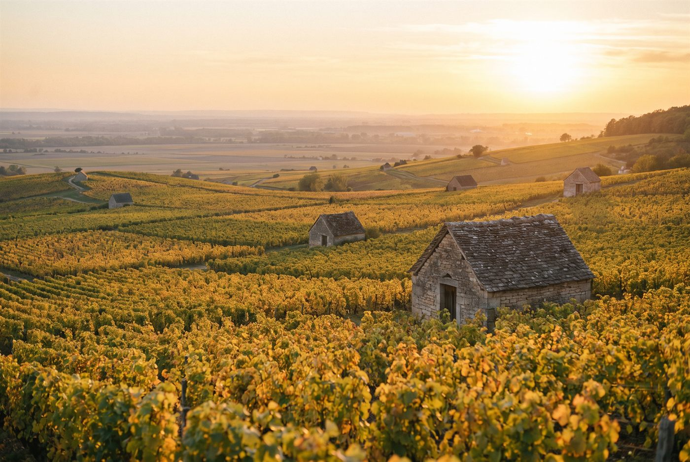

Les domaines · Côte de Beaune · Volnay
14
Volnay · Côte de Beaune
Domaine Nicolas Rossignol
Une lecture parcellaire de Volnay et de Pommard, sept et huit premiers crus côte à côte.

Ambiance de Volnay
Cinquième génération de vignerons à Volnay, Nicolas Rossignol a créé son domaine en 1997 avec trois hectares, après des expériences à Châteauneuf-du-Pape, à Bordeaux et en Afrique du Sud, avant de le porter à 17 hectares répartis sur une trentaine d'appellations de la Côte de Beaune. Chaque parcelle est vinifiée séparément, en levures indigènes, sans collage ni filtration, avec des infusions plutôt que des extractions depuis 2002. La viticulture est raisonnée et s'inspire de la biodynamie, sans désherbant chimique ni certification.
Rouges
- Cépage · Pinot noirLe climat de référence de Volnay, sur argiles rouges et calcaire; la cuvée la plus recherchée du domaine.
- Cépage · Pinot noirCoteau pentu et caillouteux au-dessus du village, réputé pour sa tension.
- Cépage · Pinot noirClimat situé sur Meursault mais rattaché à Volnay pour les rouges, profil plus charnu.
- Cépage · Pinot noirPremier cru du bas de coteau, en limite de Pommard.
- Cépage · Pinot noirClimat voisin de Pommard, à la fois structuré et parfumé.
- Cépage · Pinot noirGrand climat de Pommard côté Beaune, réputé pour son velouté.
- Cépage · Pinot noirClimat côté Volnay, l'un des Pommard les plus fins du domaine.
- Cépage · Pinot noirHaut de coteau côté Volnay, sols maigres et calcaires.
- Cépage · Pinot noirClimat célèbre au sud de Beaune, versant rouge.
- Cépage · Pinot noirAssemblage de cinq parcelles villages, dont des argiles rouges sous Caillerets et des sols blancs plus frais à La Bouchère.
Ces cuvées vous parlent ?
Demander les disponibilités